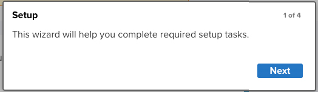
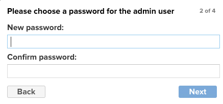
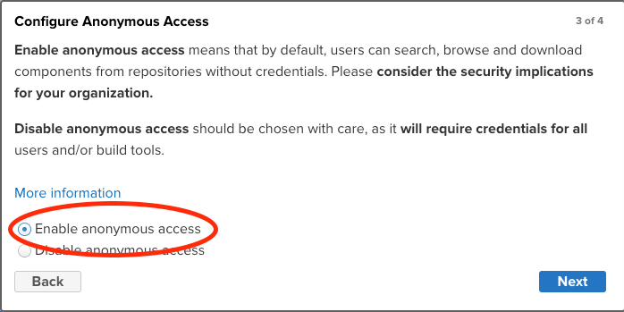
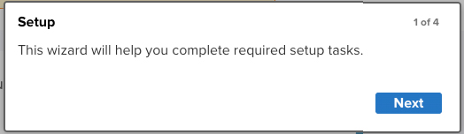
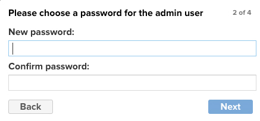
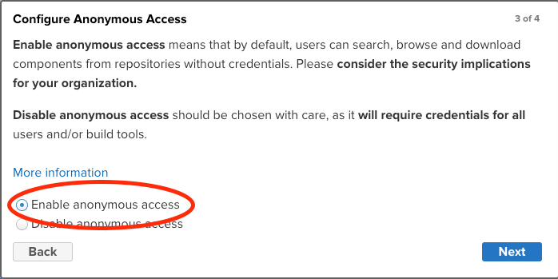
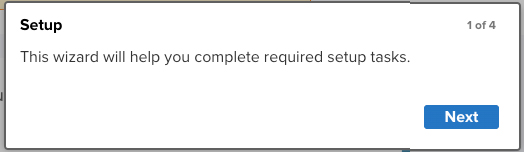
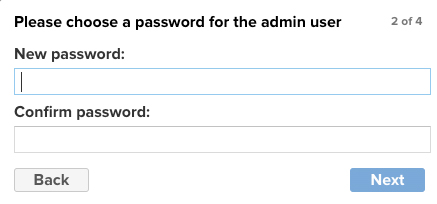
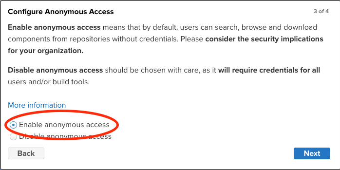

Nexus
Execute os passos abaixo para configuração do Nexus
Criando a Instância
Para criar uma instância vá no painel EC2 na opção e escolha a opção:
Executar Instâncias
Os parâmetros usados serão:
Nome: nexus
Máquina SO: Ubuntu Server 22.04 LTS amd64
Máquina Type: T2 Small
Disco: 50GB

Instância
Logo em seguida aguarde a instância ficar disponível

Criar IP Elástico
Agora precisamos criar um IP Elástico para acesso "Externo", acesse o menu
conforme a imagem abaixo, clique no menu depois em Alocar endereço IP elástico.
Dica: Quando alocar coloque o nome do ip elastico com o mesmo nome da instância criada para facilitar localização.

Associar IP Elástico
Precisamos associar esse IP a instância previamente criada, para isso então clique sobre o ip que acabou de criar,
então será apresentado uma tela com as informações do ip, clique em Associar endereço IP elástico.
Na nova tela, selecione Instância, então abaixo no campo selecione a instância previamente
criada, Depois clique em Associar

Regras de Segurança
Para acessar a Instância criada, precisamos liberar as entradas de porta então acesse o menu:
.
Aproveite e renomeie o nome do grupo de segurança para o nome da instância criada previamente e depois
selecione a regra, no menu superior Ações selecione:
 Nas regras de entrada vamos liberar todas as portas, mas em produção se atente em liberar apenas as portas
necessárias, mude o campo para conforme abaixo e clique em: Salvar Regras.
Nas regras de entrada vamos liberar todas as portas, mas em produção se atente em liberar apenas as portas
necessárias, mude o campo para conforme abaixo e clique em: Salvar Regras.

Nas regras de entrada vamos liberar todas as portas, mas em produção se atente em liberar apenas as portas
necessárias, mude o campo para conforme abaixo e clique em: Salvar Regras.
Acessando a instância
Caso você queira acessar o da máquina pelo browser, selecione a instância criada previamente clique em Conectar,
na nova tela informe o usuário , depois clique em: Conectar.
 Caso queira poderá usar o ou um cliente SSH instalado local na sua estação.
Caso queira poderá usar o ou um cliente SSH instalado local na sua estação.
Caso queira poderá usar o ou um cliente SSH instalado local na sua estação.
Instalando o Nexus
#Instalando o Java
apt update
apt install -y openjdk-8-jdk
java -version
#Adicionando o usuario
useradd -d /opt/nexus -s /bin/bash nexus
passwd nexus
#coloque a senha nexus
#repita a senha nexus
#Configurando limites
ulimit -n 65536
vim /etc/security/limits.d/nexus.conf
#coloque o valor abaixo
nexus - nofile 65536
#salve o arquivo
ulimit -a
#deve ter a linha com o valor -> open files (-n) 65536
#Baixando o nexus
wget https://download.sonatype.com/nexus/3/nexus-3.41.1-01-unix.tar.gz
#Descompactando o nexus
tar xzf nexus-3.41.1-01-unix.tar.gz
#Movendo as pastas
mv nexus-3.41.1-01 /opt/nexus
mv sonatype-work /opt/
#Configurando o nexus
vim /opt/nexus/bin/nexus.rc
#substitua o valor #run_as_user="" para run_as_user="nexus"
#salve o arquivo
vim /opt/nexus/bin/nexus.vmoptions
#altere os valores abaixo
#na linha -Xms2703m mude para -Xms1024m
#na linha -Xmx2703m mude para -Xmx1024m
#na linha -XX:MaxDirectMemorySize=2703m mude para -XX:MaxDirectMemorySize=1024m
#salve o arquivo
cd /opt/sonatype-work/nexus3
mkdir etc
cd etc
vim nexus.properties
#informe o valor abaixo
application-host=0.0.0.0
#salve o arquivo
vim /etc/systemd/system/nexus.service
#adicione as linhas abaixo
[Unit]
Description=nexus service
After=network.target
[Service]
Type=forking
LimitNOFILE=65536
ExecStart=/opt/nexus/bin/nexus start
ExecStop=/opt/nexus/bin/nexus stop
User=nexus
Restart=on-abort
[Install]
WantedBy=multi-user.target
#salve o arquivo
#Atribuindo permissao ao usuario nexus
chown -R nexus:nexus /opt/nexus /opt/sonatype-work
#Iniciando o servico
systemctl daemon-reload
systemctl start nexus
systemctl enable nexus
systemctl status nexus
cat /opt/sonatype-work/nexus3/admin.password
#copie o valor para informar no login
exit
Acessando a Instância do Nexus
Pelo IP Elastico da Instância acesse no seu browser o endereço:
 Então entre na opção Sign in
Informe o Usuário:
Informe a Senha que vc copiou do arquivo admin.password
O nexus irá solicitar uma nova senha para o
Como e primeira vez acessado O Nexus socicitará algumas configurações


Por enquando vamos deixar o acesso anônimo permitido

Por enquanto finalizamos as configurações do Nexus
Então entre na opção Sign in
Informe o Usuário:
Informe a Senha que vc copiou do arquivo admin.password
O nexus irá solicitar uma nova senha para o
Como e primeira vez acessado O Nexus socicitará algumas configurações


Por enquando vamos deixar o acesso anônimo permitido

Por enquanto finalizamos as configurações do Nexus
Então entre na opção Sign in
Informe o Usuário:
Informe a Senha que vc copiou do arquivo admin.password
O nexus irá solicitar uma nova senha para o
Como e primeira vez acessado O Nexus socicitará algumas configurações


Por enquando vamos deixar o acesso anônimo permitido

Por enquanto finalizamos as configurações do Nexus